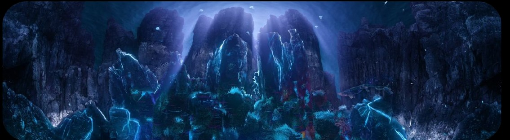
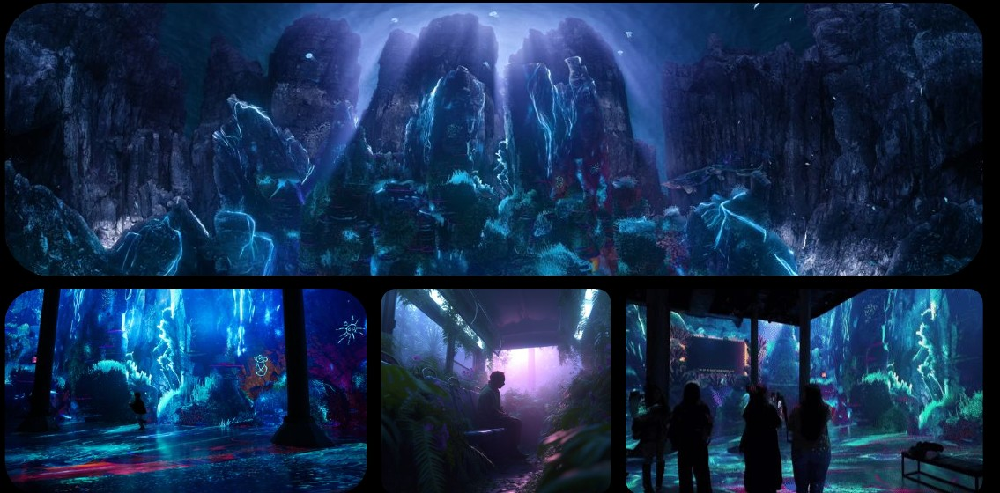
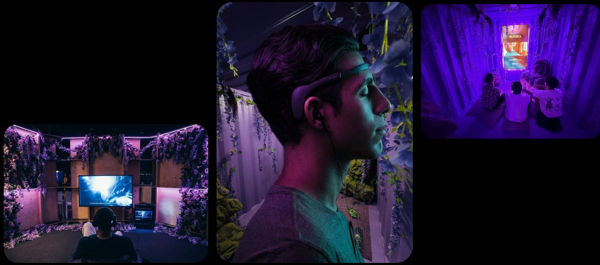
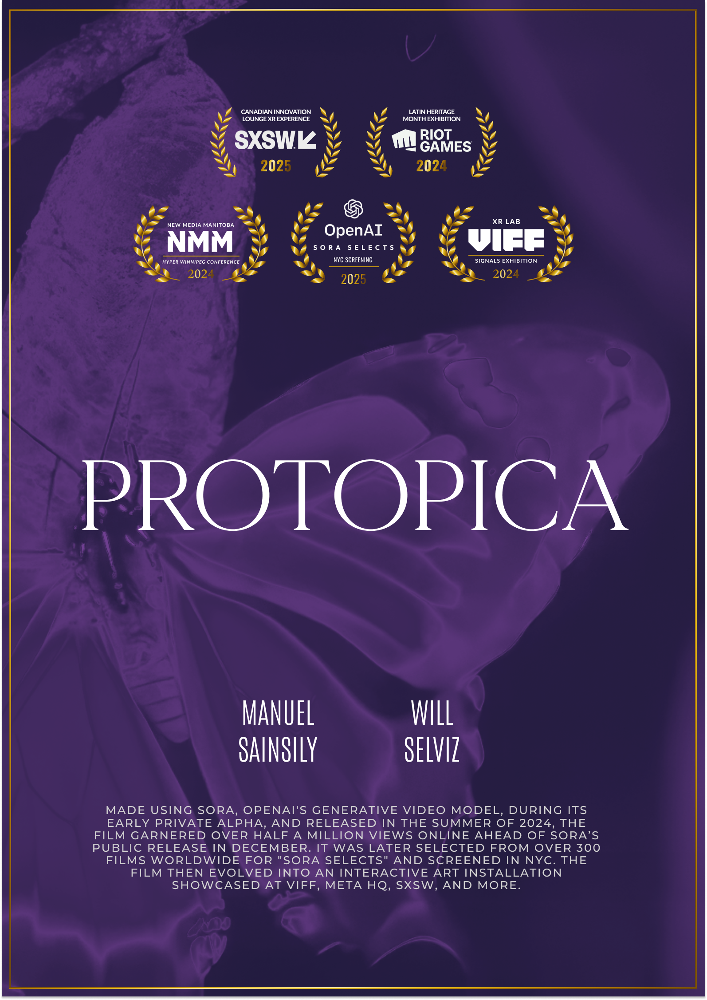

SUBMERGE: Beyond the Render, now through Aug. 31
Current exhibition / ARTECHOUSE NYC
PROTOPICA
Immersive cultural AI exhibitions for venues, festivals, grants and residencies.
We build tour-ready worlds where cultural heritage, generative cinema, spatial sound and audience signals become one public experience. The goal is concrete: preserve memory, draw audiences and help institutions show what ethical cultural AI can actually do.
270-degree cinematic installation format
Through ARTECHOUSE, VIFF, Sonar+D and public programs
Ethical brain-signal studies for cultural AI

Active exhibition
The clearest way to understand Protopica is to step inside it.
At ARTECHOUSE NYC, Protopica is no longer just a short film or a research idea. It is an immersive environment: a large-scale, high-resolution cultural AI work built for public attendance, critical context and institutional programming.
- Featured artists in ARTECHOUSE's SUBMERGE: Beyond the Render
- 18K cinematic output for a 270-degree projection environment
- Rooted in Guadeloupean memory, water, time, migration and language
- Adaptable for festivals, museums, residencies and grant-backed tours
What we make
Concrete formats institutions can book, fund or host.
Protopica is built as an expandable exhibition system: a film world, an immersive installation, an interactive research layer and a public education program.
Tour-ready immersive exhibitions
Spatial films, 270-degree projection environments, sound, show files and installation direction for museums, art centers and festivals.
For venues that need a finished audience experience.EEG-responsive audience systems
Interactive film engines where attention, relaxation, movement and collective response can alter image, sound and pacing in real time.
For labs, festivals and residencies exploring participation.Cultural AI films and worlds
Generative cinema built from research, oral memory, language, archival references and community validation instead of surface prompting.
For funders backing heritage preservation and new media.Talks, workshops and public programs
Artist talks, AI literacy labs and residency programming led by practitioners across XR, opera, VFX, neuroscience and cultural research.
For institutions that need impact beyond the screen.Track record
From OpenAI Sora to ARTECHOUSE, Sonar+D and VIFF.
The project has already moved through the full stack: viral AI cinema, public exhibition, festival technology, EEG research and cultural education.

ARTECHOUSE NYC
Protopica: Sin Agua, No Hay Tiempo
Active through Aug. 31 / 18K / 270-degree installationThe latest active Protopica exhibition expands the project into a high-resolution, 270-degree immersive environment inside SUBMERGE: Beyond the Render.

Sonar+D Barcelona
Neurogenesis
Brain-computer interaction / multi-participant cinemaA responsive film engine where EEG signals and audience state influence pacing, camera movement, sound and environmental behavior.

VIFF
Signals Creative Technology Expo
Interactive XR / cultural technologyA multisensory interactive journey where brainwaves, facial movement and hand movement shape the story in real time.

OpenAI / Sora Selects
First Sora short film
+1M views / Fast Company featureA Guadeloupean cultural AI film that reframed generative video as a tool for cultural preservation instead of extraction.
Why host or fund it
A strong fit for exhibition, residency and grant committees.
Protopica gives institutions more than a beautiful AI image. It is a public-facing case study for cultural heritage preservation, creative technology, ethical AI and audience participation.
Proven public draw
The work has already met real audiences at ARTECHOUSE NYC, Sonar+D Barcelona, VIFF Signals and public-facing AI programs.
Cultural preservation with method
Protopica treats language, ritual, migration, memory and community review as production inputs, not decoration.
Technical delivery
The team can ship cinematic AI, projection environments, XR, EEG interfaces, spatial sound, workshops and documentation.
Programming value
Each exhibition can extend into talks, classes, research partnerships and public literacy around ethical cultural AI.
Team
Artists and producers who can actually ship the work.

Creative director, cultural AI and XR
Manuel Sainsily
Guadeloupe-born artist and technologist working across VFX, real-time 3D, BCI, education and AI cultural preservation. His practice has reached millions online and has been presented by ARTECHOUSE, VIFF, Sonar+D, OpenAI, Adobe, Meta, NVIDIA and Mozilla.

Immersive media artist and XR director
Will Selviz
Founder of RENDRD Media, Clio Award winner, SXSW XR director, SIGGRAPH curator and BCI researcher building emotionally charged spatial media and participatory worlds.

Founding Artistic Director, re:Naissance Opera
Debi Wong
Award-winning XR producer, creative director and multidisciplinary artist shaping contemporary opera and creative technology. Debi is co-executive producer and co-curator of Signals Creative Technology Expo at VIFF, with work recognized by SXSW, CIMA, Aurea XR and XP Land's XLIST.
Next booking window
Bring Protopica to your venue, grant, festival or residency.
We can adapt Protopica for immersive rooms, black boxes, film festivals, academic programs, public talks and research-driven residencies. Send the context, timeline and venue specs.
Start the conversation